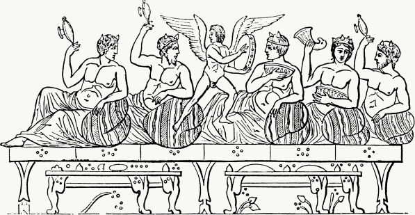

Этикет встреч
Рекомендации для продуктивных обсуждений
Какой такой этикет?
Этикет встреч — это рекомендации, которые помогают проводить встречи в больших компаниях менее болезненно и более продуктивно.
Я Ксюша Ильиных, продуктовый дизайнер. Я работаю в Контуре и помогаю делать продукты для бизнеса удобными и красивыми. Контур — большая компания, и мы с коллегами много общаемся. Бывает, что весь день занят встречами. Чтобы не страдать на встречах, я сформулировала рекомендации для организаторов и участников, и получился этикет встреч.
ты хочешь организовать встречутебя ЗОВУТ на встречу
На встрече